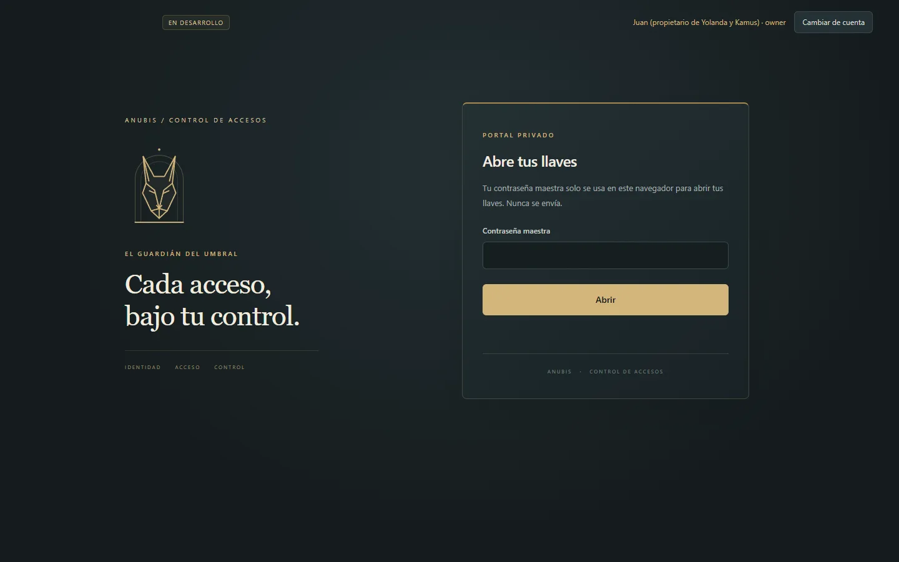
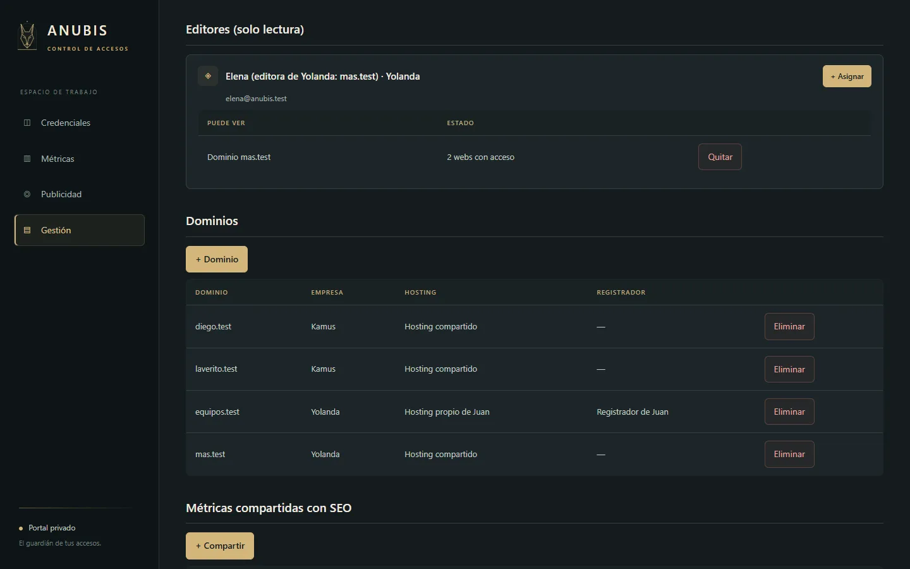
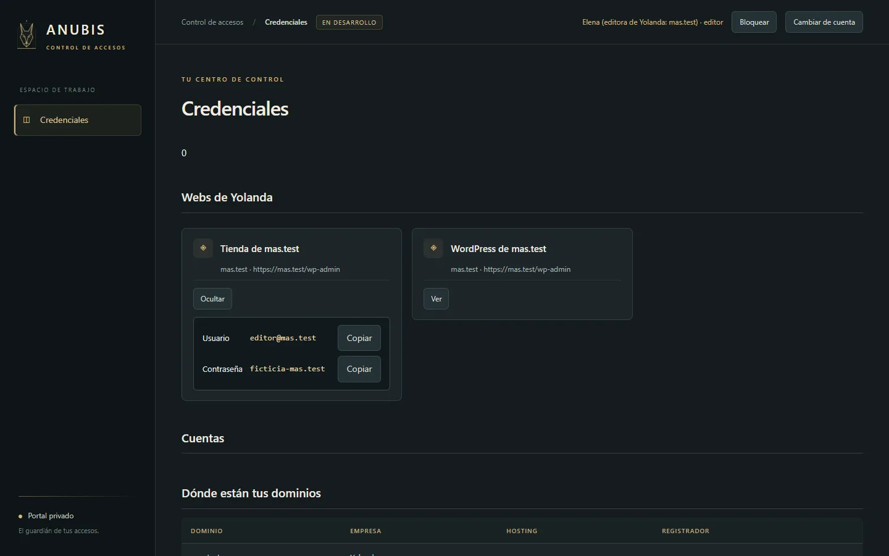
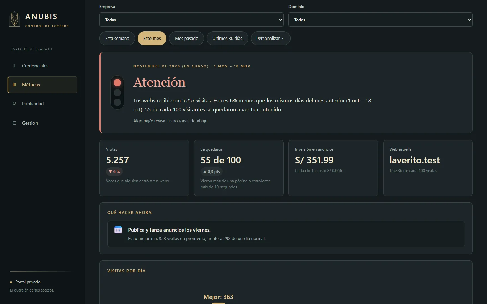
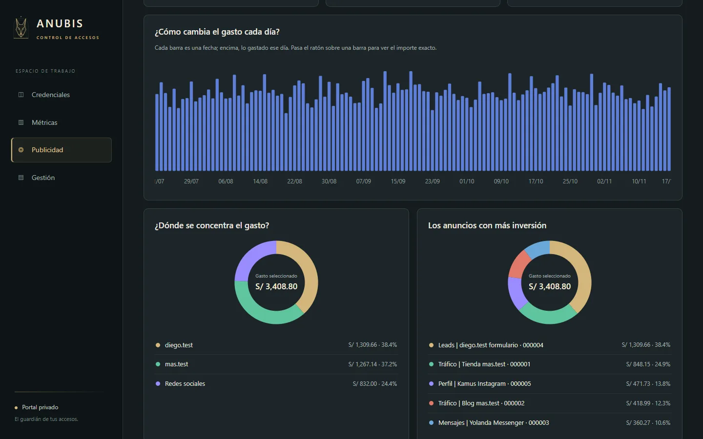
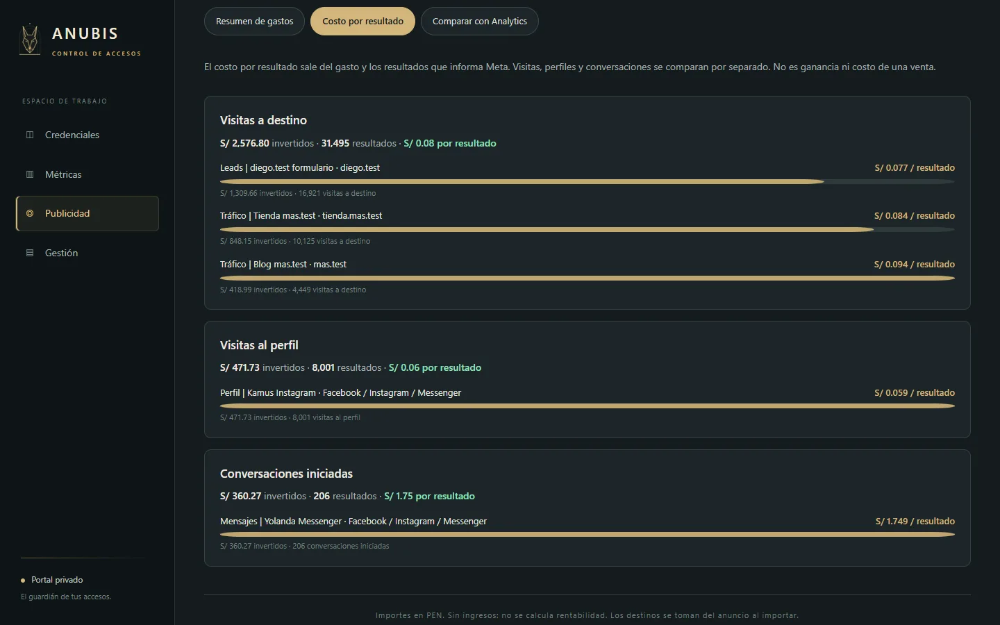

Decenas de webs, contraseñas por WhatsApp
Un equipo que administra muchas webs de varias empresas maneja accesos a WordPress, hostings, dominios, DNS y Analytics. En la práctica, esas claves terminan en chats, hojas de cálculo y correos: nadie sabe quién vio qué, y cuando alguien deja el equipo no hay forma de saber qué contraseñas cambiar.
Además, los dueños de las empresas reciben números de Analytics y de anuncios que no saben leer. Necesitan saber, en pocos segundos, si les va bien y qué hacer.
Una bóveda que nadie puede abrir sin permiso
Anubis junta en un solo lugar tres cosas:
- Credenciales cifradas de extremo a extremo: se cifran y descifran en el navegador. El servidor solo guarda texto ilegible.
- Permisos por rol: administrador, propietario, SEO y editor. Cada uno ve exactamente lo que le corresponde, y el servidor lo comprueba siempre.
- Informes que se entienden: métricas diarias de Google Analytics y gasto de Meta Ads, explicados con un semáforo, cifras en lenguaje simple y acciones concretas.

Sin servidores propios, en el borde de Cloudflare
Toda la aplicación corre como un Cloudflare Worker con una base de datos D1 (SQLite). No hay servidores que mantener, responde rápido desde cualquier país y el costo es mínimo.
- Cloudflare Access verifica quién eres (código por correo). El Worker comprueba la firma del token en cada petición; nunca se fía solo de una cabecera.
- Cada escritura es una transacción con control de versión: si otra persona cambió el mismo dato, la operación entera se revierte y se avisa.
- Reglas en la base de datos (triggers), no solo en el código: por ejemplo, una web solo puede cifrarse con la llave de la empresa de su dominio.
- Seguridad del panel: política de contenido estricta (solo scripts propios) y sin
innerHTML: ningún dato puede inyectar código.
Cajas fuertes y sobres cerrados
La forma más simple de explicarlo: cada empresa tiene una caja fuerte. Cualquiera con permiso puede meter una contraseña por la ranura (llave pública), pero solo quien tiene la llave para abrir (llave privada) puede leerla.
Esa llave nunca viaja suelta: se guarda en un sobre cerrado para cada persona, que solo se abre con su contraseña maestra, en su navegador. El servidor guarda los sobres, pero no puede abrir ninguno.
Una consecuencia interesante: guardar no requiere poder leer. El administrador puede cambiar o eliminar la contraseña de una web usando la ranura, pero no puede leer la que había.
Cada persona ve solo lo suyo
Las reglas salen de cómo trabaja de verdad un equipo de webs. Todo se comprueba en el servidor, y nadie puede crear una cuenta de su mismo nivel o superior.
| Qué | Admin | Propietario | SEO | Editor |
|---|---|---|---|---|
| Webs de su empresa | Cambia sin leer | Ve y gestiona | Consulta | Solo las asignadas |
| Cuentas propias del propietario | Cambia sin leer | Ve y gestiona | No ve | No ve |
| Hosting compartido | Ve y gestiona | No ve | Ve y usa | No ve |
| Métricas y publicidad | Todas | Sus empresas | Lo compartido | No ve |
| Actividad y papelera | Todo | Sus empresas | No | No |
- Versiones y papelera: cada cambio guarda la versión anterior y lo eliminado espera 14 días antes de borrarse.
- Anular un acceso: al desactivar a alguien, su sesión se corta y Anubis lista qué credenciales consultó, para cambiarlas.
- Varias cuentas por persona: quien tiene dos roles usa dos correos (por ejemplo con
+seo) y cambia de cuenta con un clic.
Dar acceso a unas webs, no a toda la empresa
Un editor solo debe poder consultar y copiar las credenciales de algunas webs. Esconderlas en pantalla no basta: si recibiera la llave de la empresa, técnicamente podría descifrarlo todo.
La solución fue darle a cada web su propia llave. La llave de la empresa abre todas (propietarios y SEO siguen igual), y al editor solo se le entregan sobres con las llaves de lo que se le asignó: un dominio entero o webs sueltas.


Todo el reparto es automático: al crear una web se genera su llave; al entrar un propietario, su navegador da llave propia a las webs antiguas y entrega los sobres pendientes. El servidor solo acepta entregas que una asignación vigente cubre.
Un semáforo en vez de cuarenta números
El cliente no necesita saber qué es una “tasa de interacción”: necesita saber si le va bien y qué hacer. Por eso la pestaña de métricas abre con una vista simple:
- Veredicto con semáforo (bien, estable o atención) y una frase: “Tus webs recibieron 5.257 visitas, 6% menos que el mes pasado; 55 de cada 100 se quedaron”.
- Cuatro cifras en lenguaje simple, cada una con su flecha frente al periodo anterior.
- Qué hacer ahora: hasta tres acciones con el dato que las respalda (mover presupuesto a la campaña más barata, mejorar la web con menos interacción, publicar el mejor día…).
- Periodos de un clic: esta semana, este mes, mes pasado, 30 días o personalizado; con menos de 3 días de datos, no alarma.

¿Cuánto cuesta atraer resultados?
La pestaña Publicidad lee el gasto de Meta Ads por anuncio y por día (importado del CSV del Administrador de anuncios) y lo muestra en tres vistas con filtros de dominio, sitio, anuncio y fechas:
- Resumen de gastos: gasto, CPC, costo por visita, CPM, gasto diario y donas por dominio y por anuncio.
- Costo por resultado: ranking de anuncios del más barato al más caro, separado por tipo de objetivo.
- Comparar con Analytics: gasto de Meta frente a sesiones de GA4 por sitio, solo en los días con datos en ambas fuentes y aclarando que no es atribución.


El importador entiende exportaciones en español o inglés, fechas y montos en ambos formatos, asocia cada anuncio a su dominio por la URL de destino y deja los anuncios a perfiles o Messenger como “Redes sociales”.
400 pruebas antes de cada cambio
En un gestor de contraseñas un error de permisos es grave, así que cada regla tiene su prueba automática. Las pruebas usan cifrado real, igual que el navegador: por ejemplo, comprueban que un editor no puede descifrar una web que no se le asignó, aunque intente “colarse” directamente por la API.
También trabajé con un entorno local con cuentas de prueba (un selector que solo funciona en 127.0.0.1) y una versión desplegada con base de datos vacía, protegida por Cloudflare Access.
Lo que me llevo de este proyecto
- La seguridad se diseña, no se agrega al final. La llave por web obligó a repensar cómo se reparten las llaves, no solo a ocultar botones.
- Un dato sin explicación no sirve. Pasar de “tasa de interacción 54,2%” a “55 de cada 100 se quedaron” cambió cómo el cliente usa el informe.
- Las reglas importantes van en varios lugares: en el código, en la base de datos y en las pruebas.
- Desplegar en serverless (Workers + D1 + Access) permite tener una app segura en internet sin administrar servidores.
Próximos pasos: importación automática diaria de Meta por API, autenticación en dos pasos para administradores y respaldos cifrados semanales.